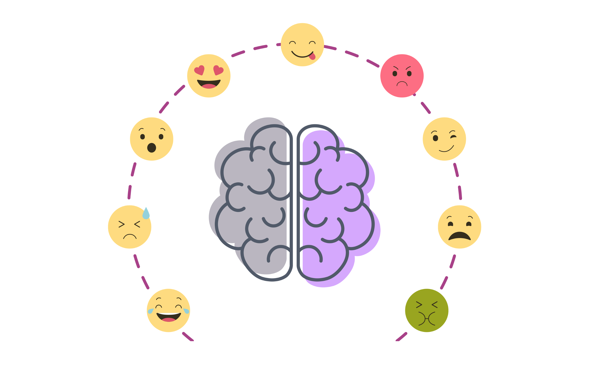

EMOTIONS

Our brain analysis various emotions vividly: freight, anger, sorrow, depression, happiness… The various feel are identified by sets of memories and instincts pre-build in the core of the brain. For instance, freight or horror for that matter is related to screams, cries and high-pitched sounds which instills a sudden awareness, a sense of freight in us.
This has been a massive game-changing technique for the horror industry. Experts still have a lot of questions about the brain’s role in a range of emotions, but they’ve pinpointed the origins of some common ones, including fear, anger, happiness, and love.
Where do emotions come from?
A limbic system is a group of interconnected structures located deep within the brain. It’s the part of the brain that’s responsible for behavioral and emotional responses. Scientists haven’t reached an agreement about the full list of structures that make up the limbic system, but the following structures are generally accepted as part of the group:
Hypothalamus:
In addition to controlling emotional responses, the hypothalamus is also involved in sexual responses, hormone release, and regulating body temperature.
Hippocampus:
The hippocampus helps preserve and retrieve memories. It also plays a role in how you understand the spatial dimensions of your environment.
Amygdala:
The amygdala helps coordinate responses to things in your environment, especially those that trigger an emotional response. This structure plays an important role in fear and anger.
Limbic cortex:
This part contains two structures, the cingulate gyrus, and the parahippocampal gyrus. Together, they impact mood, motivation, and judgment.
The brain is a complex organ that researchers are still trying to decode. But experts have identified the limbic system as one of the main parts of the brain that controls basic emotions.
As technology evolves and scientists get a better glimpse into the human mind, we’ll likely learn more about the origins of more complex emotions.